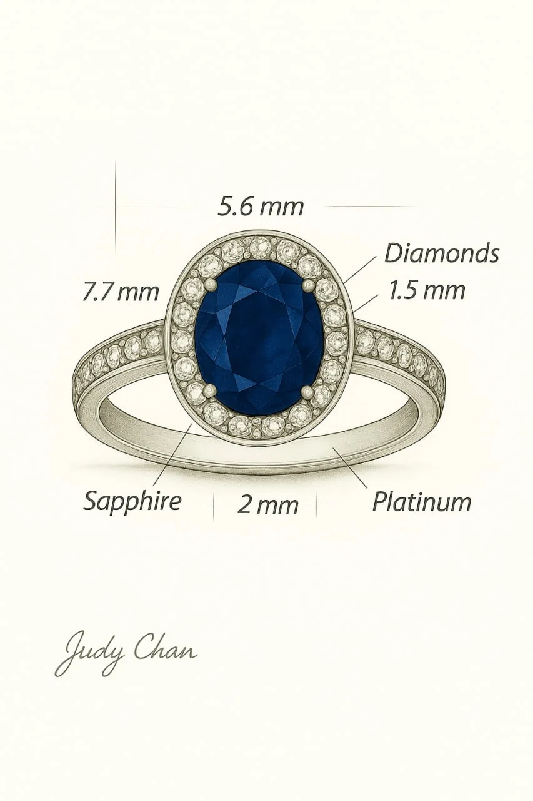
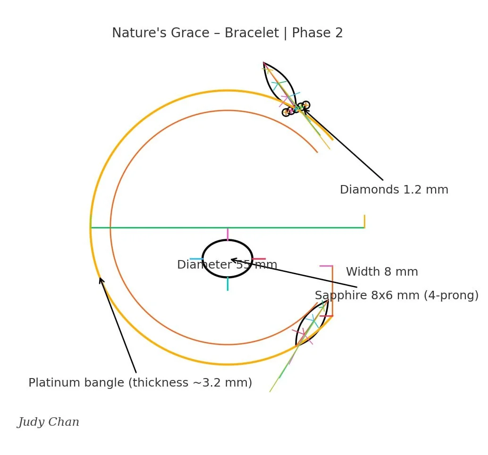

Bespoke
A private commission, shaped in five careful moves.
Judy's bespoke work is for proposals, anniversaries, family stones, and singular pieces that need time before they become obvious.

Private consultation
We discuss story, wear, stone preferences, timing, and budget.
Design sketch
Judy develops the silhouette, setting language, and proportion studies.
3D confirmation
Renderings clarify scale, profile, and the jewel's life on the body.
Hand making
Trusted makers set, finish, and inspect each detail in Los Angeles.
Delivery
The final piece is presented with care guidance and future service notes.
Consult
In studio or virtual
Timeline
Typically 8-12 weeks
Start
By private appointment

From line to setting
The first version is often a drawing.
Proportion notes, gemstone scale, and a piece's resting profile are resolved before the final polish catches the light.
Begin
Bring a feeling. Judy will find the form.
A first appointment can begin with a gemstone, a family reference, a ceremony date, or simply the way you want the piece to move.